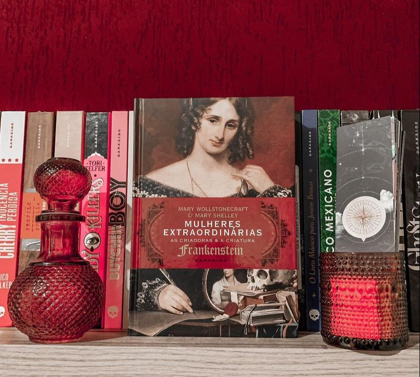

Mulheres Extraordinárias: As Criadoras e a Criatura
( Charlotte Gordon - Darkside)
⭐⭐⭐⭐⭐
O que eu poderia falar deste livro, livro não, livrão (tanto pela qualidade, quanto pelo número de páginas que somam mais de 600) maravilhoso que vai contar através de capítulos intercalados toda a vida de Mary Wollstonecraft e Mary Shelley. Mãe e filha que nunca se conheceram, mas que carregaram a ligação de amor e devoção por toda vida. Ambas se tornaram escritoras e cada uma se destacou de uma maneira diferente. Mary Wollstonecraft é considerada uma das fundadoras do feminismo; redigiu Reinvindicação dos Direitos da Mulher e se tornou um ícone da luta, denunciando e lutando contra a exclusão das mulheres na sociedade do século dezoito. Mary Shelley é ninguém mais, ninguém menos autora do clássico “Frankenstein”.
Charlotte Gordon nos faz entender todo o paralelo entre as vidas de mãe e filha, Wollstonecraft morreu poucos dias do após o parto de Mary, por complicações , mas se tornou um eco em tudo que a filha fez e conquistou. Mary buscava a aprovação e o reflexo da mãe em toda sua vida, mesmo sem ter tido a chance de conhecê-la e isso fica bem claro na obra! É uma obra tocante, para ser estudada, digerida, contemplada em seu todo. A edição é maravilhosa e da aquele aspecto de livro antigo que combina muito com a obra!